The feel
Yoshi's Crafted World looks as if it was built over long afternoons on the living room floor, with cereal boxes for mountains, cardboard clouds hung on string, lollipop sticks and sticky-back plastic.1 Tearaway is all brightly coloured card and streaks of glue, and Eurogamer's reviewer found that the crinkling and rustling of its paper are what sell the illusion.2 Good-Feel set out to give Kirby's Epic Yarn a game world with a certain warmth to it.3
It uses the power of 3D to look flat. While home consoles were going for realistic 3D, Intelligent Systems used polygons to make Paper Mario feel like a picture book, with paper-thin backgrounds and characters.4 Nintendo producer Hiroyasu Sasano said it is hard to bring out cuteness in characters made from polygons.5 The material also tells you what can happen: Media Molecule built Tearaway from paper because pushing your finger into a world of stone or metal is not very interesting.6
- handmade
- tactile
- cosy
- tabletop-sized
- a little wonky
- fridge-door proud
Where it comes from
Paper Mario's look began with a picture that Naohiko Aoyama, then a new designer at Intelligent Systems, drew on 5 March 1997,4,7 and the game reached Japan as Mario Story on 11 August 2000.5 Media Molecule's founders pitched LittleBigPlanet to Sony in 2006, and through every redesign Sackboy kept the handmade buttons, patches and hessian fabric that Mark Healey pushed for.8,6 Good-Feel went from yarn in Kirby's Epic Yarn (2010) to wool in Yoshi's Woolly World (2015) and cardboard cut-outs in Yoshi's Crafted World (2019).3,9 Among small studios, State of Play built a whole model city to film for Lumino City,10 and Nyamyam, a tiny team formed by two former Rare developers, spent three years on Tengami, a pop-up book of traditional Japanese illustration brought to life.11
Core elements
Real-material mock-ups
The look starts with real materials on a desk. Media Molecule tries to make anything going into Tearaway out of paper first, to be sure it can be done.6 Intelligent Systems made mock-ups of The Origami King's characters in actual paper, then adjusted even the small details so they look folded.7
Flat characters on pop-up sets
Flat characters walk through deep sets. The Thousand-Year Door puts flat 2D characters among pop-up-book 3D backgrounds, and its set pieces fold away as Mario goes in and out of buildings.12 In Tengami the whole world is a pop-up book: you slide tabs to move things and turn its pages to make a new scene.11
Material-based mechanics
What the stuff can do becomes the game. In The Thousand-Year Door, Mario's paper body slips through gratings, glides like a paper aeroplane and rolls up into a tube.12 Sticker Star's team asked what would be troublesome for paper, and came up with folding, soaking, burning, sticky tape ripped off and a tack.13 Good-Feel drew Kirby's Epic Yarn's mechanisms from its yarn and cloth.14
Visible construction marks
The marks of making are kept. Tearaway Unfolded adds thick edges to every paper edge that hasn't been torn, as real 3D edging rather than texture,15 and in Tearaway the things you make look a little rough and wonky, which adds to its stick-it-on-the-fridge-door feel.2 Yoshi's Crafted World keeps its tape for the back: each level's flip side, open once you have finished it, shows the sellotape, Blu Tack and string holding up its front.1
Tabletop scale
The camera treats the world as a model on a table. Lumino City narrows the depth of field so only a small area is in focus, which its maker says can even make the game better to play.10 Eurogamer credits the human touch and a dash of tilt-shift focus for making Yoshi's Crafted World feel real.1
Everyday stationery props
Props come out of the stationery cupboard. The Origami King's stationery bosses were chosen from things everyone will have handled at some point,7 and Crafted World pulls out cardboard, string and fizzy pop straws, with cereal boxes standing in for mountains.1 Players make things too: photograph one of Tearaway's plain white objects and you unlock a printable papercraft model of it.2
How to do it
Build a physical mock-up
Build the idea in real materials before you model it. Good-Feel bought cloth and photographed it for the proposal that became Kirby's Epic Yarn, because images in a proposal don't move,3 and a Media Molecule web designer rebuilt a whole Tearaway level in paper in a couple of days.6 A small team can even film the model: State of Play spent months designing Lumino City with an architect who brought modelmaking techniques such as laser cutting, then filmed the model city, synced the footage with animation, and blurred the characters and added film grain so they fit the scene.10
Add thickness to every sheet
Rex Crowle, Tearaway's lead creator, says coloured construction paper has little texture, so anything made from it has to be bold, but it is the details that matter: the tiny shadows under paper that hasn't been glued down, the torn edges and the tabs that hold it together.16 Model paper and card as single faces, then give the surface thickness with a shell or solidify modifier.17 An offset from -1 to 1 puts the new shell inside or outside the sheet, and at 0 the shell is centred on it. Give the rim faces a material of their own, and apply the scale first, because thickness is measured in local coordinates.17
Make folds sharp and cut edges clean
Make each fold a real edge in the mesh, and set edges sharp or smooth by the angle between their faces, so a fold stays crisp while gentle bends stay soft.18 Draw torn and snipped outlines into the texture's alpha instead, and cut them with an alpha scissor, made for hard edges such as foliage and fences: unlike alpha blending, it casts shadows and has no sorting problems.19 For a sharp but antialiased cut, turn on alpha antialiasing with its edge value below the scissor threshold (0.3 against 0.5 is a sensible start), and use at least 2× MSAA.19
Stand cut-outs in the set
Paper Mario's characters are flat sprites in a polygon world.5 Make each cut-out a textured sprite in the 3D scene and cut its outline with an alpha scissor: every pixel is fully opaque or fully clear, so overlapping sheets don't sort wrongly, but edges look harsh unless screen-space antialiasing is on.20 Make it double-sided so the sheet shows from behind, let lights affect it, and flip it horizontally to turn it round. Set its size in the world by the width of one pixel, such as 0.01.20
Light both sides of the sheet
A set made of planes needs its shadows checked. Set each sheet to cast two-sided shadows, so a single-sided plane or quad still casts a shadow when the light is behind it.21 For sheets that glow when lit from behind, add back lighting, which passes light from the lit side to the dark side and suits thin objects such as plant leaves.19
Add a soft rim to cloth and yarn
Keep yarn characters simple. The designer of Good-Feel's first yarn hero wanted it made from one single piece of yarn, a round shape whose yarn texture made it soft and warm.14 For cloth and wool, a rim light term imitates the micro-fur on some fabrics; it only shows where light falls, and its size follows the roughness. Tint it between the light's colour and the material's own colour: in-between values generally work best.19
Use a shallow depth of field
Focus sells the scale. Use a low aperture (f-stop) for big bokeh, move the camera close, lower the field of view and set the focus distance so the scene blurs in front of and behind the focus plane; a debug view of the focus plane shows where it sits.22 Lumino City narrowed its focus to pull your attention to the foreground, or left the background blurred to make you curious about it.10
Cheat sheet
- Sheet edge
- Shell thickness, offset 0 to centre it on the sheet, own rim material17
- Cut and torn edges
- Alpha scissor at 0.5, antialiased edge at 0.3, MSAA 2× or more19
- Cut-out sprite
- Alpha scissor, double-sided, lit, 0.01 per pixel20
- Shadows
- Two-sided, so single planes still cast them21
- Light through paper
- Back lighting, for thin objects19
- Fabric fuzz
- Rim light, tint between light and material colour19
- Camera
- Low f-stop, camera close, low field of view22
Do
- Ask what the material fears, and build attacks and hazards from the answer, as Sticker Star's team did when they listed what would be troublesome for paper.13
- Check every idea against the material. Intelligent Systems watches whether each idea, and the way it looks, still fits a world built of paper.7
- Mark what can be handled. Tearaway puts fingerprint textures on the objects you can tug or unfurl.2
- Let players cut things out, and keep them in the world. The crown you make for Tearaway's Squirrel King is still on his head hours later, every wonky line and imperfect snip on show.2
- Give each material its own sound. LittleBigPlanet picks a collision sound from the relative velocity, size and hardness of the materials, across 30 physics audio material types.23
Avoid
- A lovely material over a dull game. Before Kirby joined it, Epic Yarn had a great world-of-yarn atmosphere but was boring to play, and Iwata warned that fun built on a neat atmosphere and low difficulty wears off.14
- Breaking the material's logic. Eurogamer's Tengami review asks what sort of papercraft world lets you move flame from one torch to the next by dragging your finger.11
- Saving the craft for special moments. The same review faults Tengami for treating its premise as an occasional reward instead of the basis of play.11
- Harsh hazards in a soft world. In an early version of Kirby's Epic Yarn the harder levels were full of thorns, and one of the team, who loved the yarn motif, asked why something so harsh was happening in this fun-looking world of yarn.14
- Folding a character until nobody knows it. The Origami King's characters had to stay clearly identifiable, so its designers put each one's individuality and features first when they turned it into origami.7
Tools and tutorials
- Export Paper Model
Unfolds a mesh into a flat net as a PDF or SVG ready to print, with compensation for thick card.24
- Pepakura Designer
Turns 3D models into unfolded patterns to cut, glue and assemble.25
- Godot Docs: SpriteBase3D
Every setting for flat sprites in a 3D scene, from Alpha Cut to Double Sided.20
- Blender Manual: Solidify Modifier
Thickness for paper and card modelled as single faces.17
- Unreal Engine: Depth of Field
Aperture, focus distance and the debug focus plane, for the tabletop look.22
- Godot Docs: Standard Material 3D
Alpha scissor and edge antialiasing for cut paper, back lighting for thin sheets and rim for fabric fuzz.19
Palette
Paper white, orange sky, paper red and plum come from Tearaway Unfolded's key art, cardboard from Yoshi's Crafted World, and felt green, fabric blue and felt pink from Kirby's Extra Epic Yarn.
Feel the vibe
Listen
Play it while you build a first test level from cardboard, felt and string.
YouTubeFor a long session of folding, cutting and gluing test sheets.
YouTubeFor slow work on one pop-up scene at a time, page by page.
YouTubePut it on at the modelling table while a small card city takes shape.
YouTubeFrom outside games: a tune for a worktable covered in offcuts, tape and string.
YouTube
More references
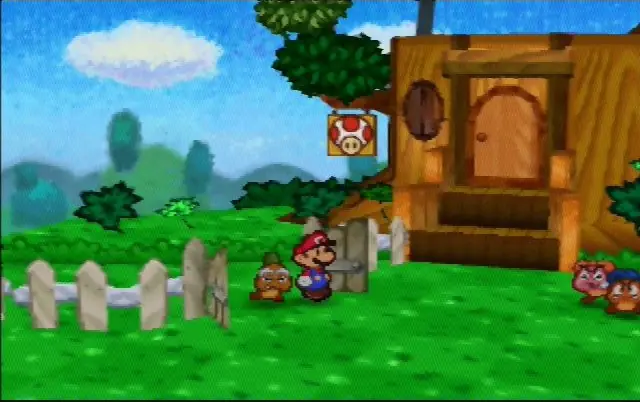
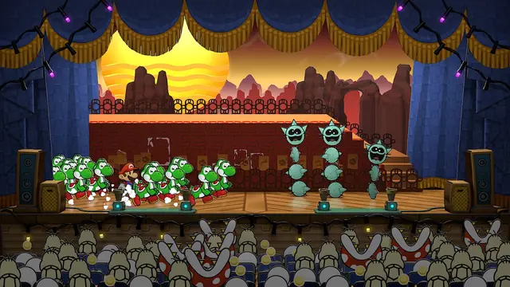
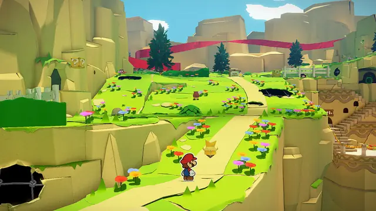
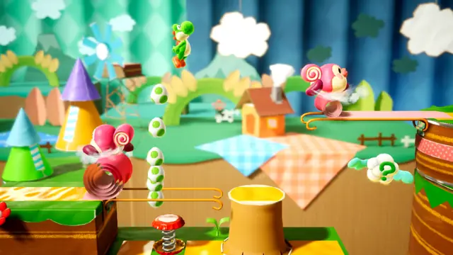
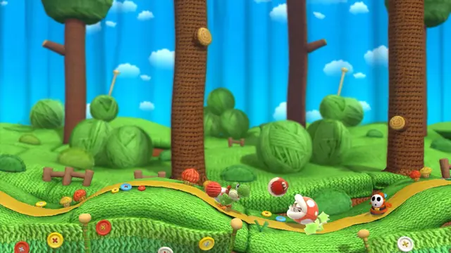
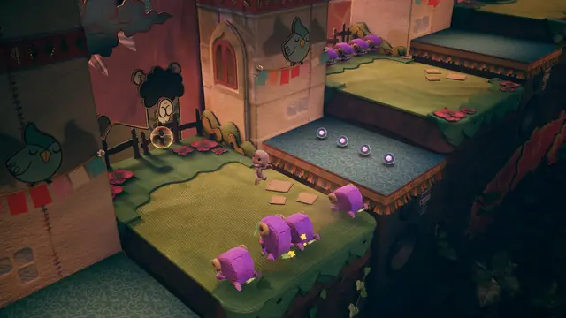
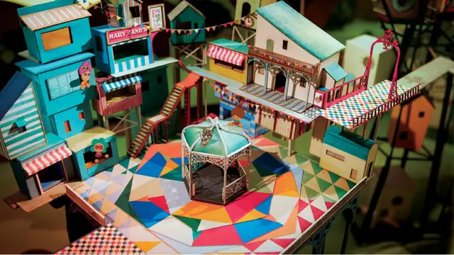
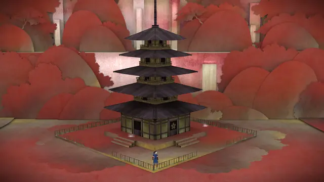
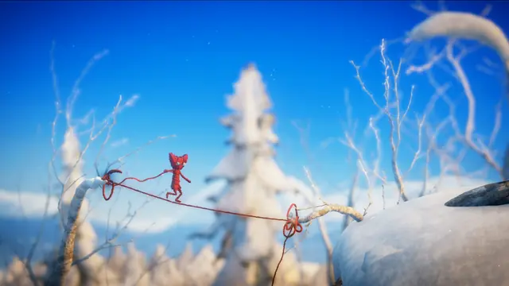
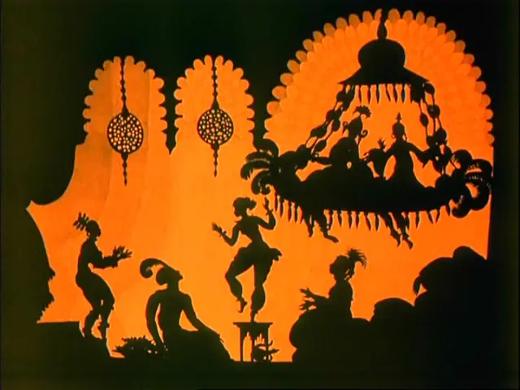
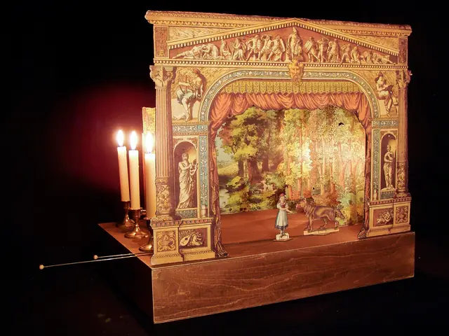
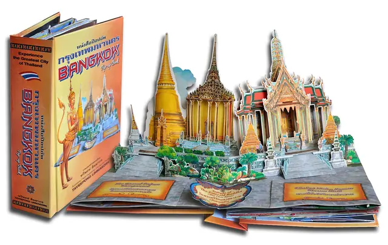
Games
- Paper Mario
The series' first look: flat paper sprites on polygon backgrounds.5
- Paper Mario: The Thousand-Year Door
Study how its sets fold away like a stage and how Mario's paper body opens new paths.12
- LittleBigPlanet
Study Sackboy's buttons, patches and hessian,8 and the 30 material types behind its physics sounds.23
- Kirby's Epic Yarn
Kirby remade in yarn. Its makers were surprised how well it worked.14
- Tearaway
A paper world you reach into, pushing your fingers through from the back of the console.2
- Yoshi's Crafted World
Cereal-box mountains, clouds on string, and a flip side that shows the tape.1
- Paper Mario: The Origami King
Origami characters worked out in real paper mock-ups, and stationery bosses.7
- Paper Mario: Sticker Star
Kensuke Tanabe thinks it is probably the furthest the series has taken the idea of paper.13
- Lumino City
A real model city, filmed instead of rendered, with focus the player can shift.10
- Tengami
A Japanese pop-up book you play by sliding tabs and turning pages.11
- Yoshi's Woolly World
Compare its wool with Epic Yarn's yarn and cloth and Crafted World's cardboard.9,14
- PaRappa the Rapper
An earlier split of flat 2D characters and a 3D world, which Paper Mario's look harks back to.5
Film, art and more
- The Adventures of Prince Achmed
Lotte Reiniger's silhouettes: jointed flat figures, re-posed for every frame. It may have been the first animated feature.26
- Origami
Folding 2D and 3D subjects out of paper, mostly from one square sheet. Look at it before you fold a character.27
- Nintendo Labo
Nintendo's fold-it-yourself cardboard. Eurogamer wonders whether the Labo team's cardboard rubbed off on Yoshi's Crafted World.1
- Pop-up books
Learn the V-fold, whose three creases meet at one point on the gutter, and the parallel fold, whose main creases run parallel to it, before you build a pop-up in 3D.28 Neither pops unless it straddles the gutter with its angles and lengths balanced.28
Sources
- 1Yoshi's Crafted World review - at long last, a worthy successor to Yoshi's Island
- 2Tearaway review
- 3Iwata Asks: Kirby's Epic Yarn, 1. Using Real Yarn and Cloth
- 4Iwata Asks: Paper Mario: Sticker Star, 2. Going All Out with Stickers
- 520 Years Ago, Nintendo Transformed the RPG Genre With Paper Mario
- 6You can papercraft all of Tearaway in the real world
- 7Paper Mario: The Origami King developers talk origami influences, hidden Toads and celebrating Super Mario
- 8From YellowHead to Sackboy
- 9Know Your Developers: Good-Feel
- 10Road to the IGF: State of Play's Lumino City
- 11Tengami review
- 12Paper Mario: The Thousand-Year Door Review
- 13Iwata Asks: Paper Mario: Sticker Star, 5. Brainstorming Paper Ideas
- 14Iwata Asks: Kirby's Epic Yarn, 2. Why Not Make It Kirby?
- 1517 Weird Things You Didn't Know about Tearaway
- 16Unfolding story: The making of Tearaway
- 17Blender Manual: Solidify Modifier
- 18Blender Manual: Smooth By Angle Modifier
- 19Godot Docs: Standard Material 3D and ORM Material 3D
- 20Godot Docs: SpriteBase3D
- 21Unity Manual: Mesh Renderer component reference
- 22Depth of Field in Unreal Engine
- 23Heard About: LittleBigPlanet
- 24Export Paper Model
- 25Pepakura Designer
- 26Lotte Reiniger
- 27Origami
- 28Physics of Paper Engineering